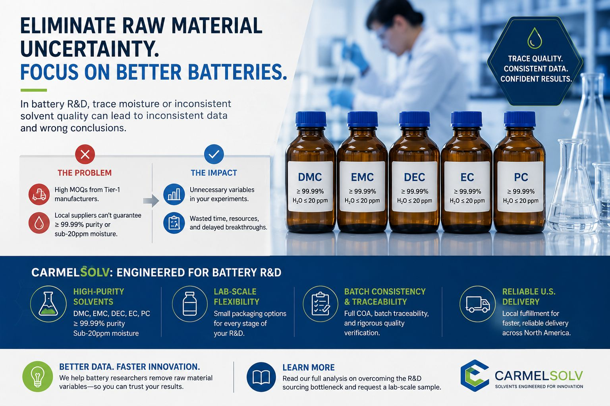

In battery R&D, cell performance data is only as reliable as the materials used to generate it. Yet one variable is frequently underestimated: the quality and consistency of the electrolyte solvents that form the medium for electrochemical testing. Moisture ingress, batch-to-batch impurity variation, and incomplete quality documentation can introduce uncertainty that obscures the very performance signals researchers are trying to measure.
When evaluating a new cell formulation — whether anode materials, cathode coatings, or electrolyte additives — research teams naturally focus on active materials, electrode design, and cycling protocols. But the carbonate solvent system carrying the electrolyte salt is not an inert bystander. Trace water, residual alcohols, and unspecified organic impurities can participate in side reactions, shift electrochemical stability windows, and alter interfacial behavior at electrode surfaces. Controlling for solvent quality is therefore not a peripheral concern — it is a prerequisite for reproducible electrochemical data.
The Overlooked Variable in Electrochemical Testing
Battery researchers invest considerable effort in controlling experimental conditions: glovebox atmosphere, electrode coating uniformity, separator selection, and formation protocol. But when the electrolyte solvent itself carries uncontrolled variability, every downstream measurement inherits that uncertainty.
Three solvent-related parameters have a disproportionate impact on electrochemical results:
- Moisture content. Water reacts with LiPF6 to generate HF, which attacks cathode materials, corrodes current collectors, and accelerates capacity fade. Even at concentrations below 50 ppm, moisture can shift the electrochemical stability window and alter SEI formation kinetics.
- Purity profile. Residual alcohols from carbonate synthesis (methanol, ethanol) are electrochemically active at potentials relevant to high-voltage cathodes. Unidentified organic impurities can contribute to parasitic currents that mask the true performance of the active materials under study.
- Batch-to-batch consistency. When solvent specifications drift between orders — even within the same nominal grade — researchers may observe shifts in Coulombic efficiency, impedance, or cycle life that are incorrectly attributed to changes in electrode formulation or cell design.

For teams running statistically designed experiments across multiple solvent batches, the compounding effect of these variables can turn a well-controlled study into an exercise in noise reduction.
The Sourcing Bottleneck for Laboratory-Scale Research
Battery researchers across North America consistently report two structural challenges when sourcing electrolyte-grade solvents for R&D and pilot-scale testing:
Volume Mismatches
Large chemical manufacturers often set minimum order quantities (MOQs) designed for production-scale customers — drums, totes, or tanker loads. For a university electrochemistry lab or a pilot facility running formulation screening experiments, these volumes far exceed practical needs. Researchers are left managing excess inventory, allocating disproportionate storage space, and committing budget to materials that may sit unused for months — all while the clock runs on funded research programs.
Quality Documentation Gaps
Many local distributors and resellers, while offering smaller pack sizes, cannot provide the detailed quality verification that battery research demands. Parameters such as water content (Karl Fischer titration), gas chromatography purity profiles with identified impurity peaks, and batch-specific certificates of analysis are often unavailable or incomplete. Without this documentation, researchers cannot establish a controlled baseline for their solvent system — and cannot troubleshoot when results deviate from expectation.
The outcome is a familiar frustration across the battery R&D community: teams either over-purchase and over-store to meet manufacturer MOQs, or accept solvents with unverified quality — introducing uncontrolled variables into experiments designed to isolate electrochemical performance.
A Quality Verification Framework Designed for Battery R&D
At CarmelSolv, we approach electrolyte solvent supply from the perspective of the laboratory researcher and pilot-scale formulator. Our sourcing and verification framework is built around three principles designed to reduce raw-material uncertainty without requiring industrial-scale purchasing commitments:
Documented Purity Specifications
Every batch is supported by a Certificate of Analysis (COA) covering parameters relevant to electrochemical applications: GC purity, moisture content (Karl Fischer), and appearance. Researchers know exactly what is in their solvent system.
Laboratory-Friendly Packaging
Packaging options scaled to R&D and pilot work — not just bulk industrial formats. Order what you actually need for formulation screening, electrolyte optimization, or compatibility testing.
Batch Traceability
Each shipment is linked to its batch documentation, allowing researchers to track material identity across experiments. If a result shifts unexpectedly, solvent quality can be confirmed or ruled out quickly.
This framework means that when your team observes a change in electrochemical performance, you can isolate whether it originates in your active materials, your cell design, or your solvent system — rather than carrying all three as open questions into the next round of experiments.
The goal is simple: reduce raw-material uncertainty so your team can focus on interpreting battery performance data with confidence.
— CarmelSolv quality verification philosophy
Electrolyte Solvent Portfolio
Our current offering includes five core carbonate solvents used across lithium-ion battery research, supercapacitor electrolyte development, and electrochemical materials testing. Each is available with supporting COA documentation and batch traceability, packaged for laboratory and pilot-scale use.
| Solvent | Abbreviation | CAS No. | Key Characteristics for Electrolyte Use |
|---|---|---|---|
| Dimethyl Carbonate | DMC | 616-38-6 | Low viscosity; high dielectric contribution in blended systems; enables fast Li⁺ transport |
| Ethyl Methyl Carbonate | EMC | 623-53-0 | Asymmetric carbonate; broad liquid range; balances viscosity and oxidative stability |
| Diethyl Carbonate | DEC | 105-58-8 | Low melting point (−43 °C); good oxidative stability; common in low-temperature formulations |
| Ethylene Carbonate | EC | 96-49-1 | High dielectric constant (ε ≈ 90); effective SEI-forming solvent; solid at room temperature |
| Propylene Carbonate | PC | 108-32-7 | Wide liquid range (−49 to 242 °C); high flash point (132 °C); strong solvency for Li salts |
These solvents form the backbone of most conventional and next-generation electrolyte formulations. Whether your team is optimizing a standard LiPF6-based system or exploring novel salt-solvent combinations, starting from a verified, documented solvent baseline eliminates one of the most common — and most avoidable — sources of experimental variability.
Request a Lab-Scale Sample
Reducing raw-material uncertainty should not require an industrial procurement department. If your team is evaluating electrolyte formulations and needs verified, high-purity carbonate solvents in laboratory-appropriate quantities, we can help.
Tell us about your research application, the solvents and volumes you need, and any specific quality parameters you require. We will respond with pricing, specifications, and availability — without the industrial-scale minimums that create friction for R&D programs.